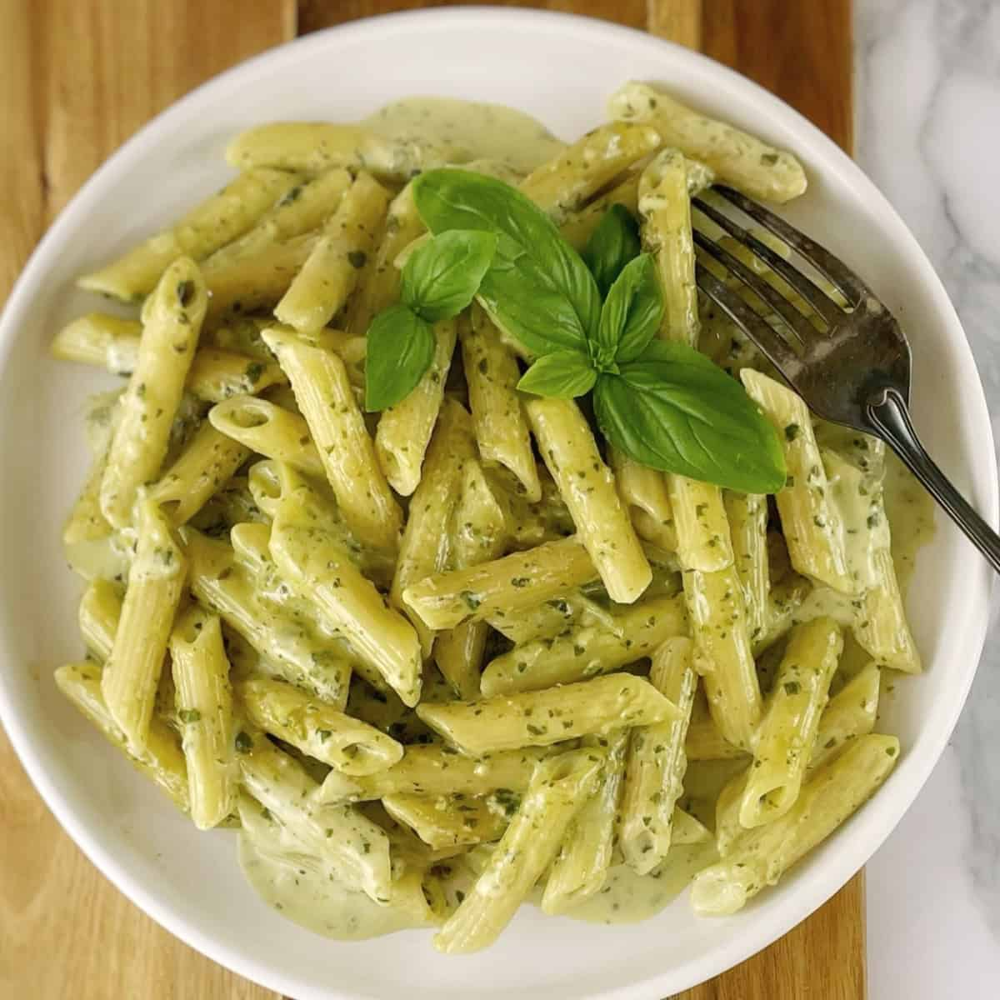

Hauptgericht · Schnell
Pasta mit Pesto

Schnelle Pasta mit cremigem Pesto.
Für 2 Personen
Zutaten
- 250 g Pasta
- 120 g Pesto
- 40 g Parmesan
Zubereitung
- Pasta in Salzwasser kochen.
- Pesto mit etwas Nudelwasser verrühren.
- Pasta abgießen und mit dem Pesto vermengen.
- Mit Parmesan servieren.